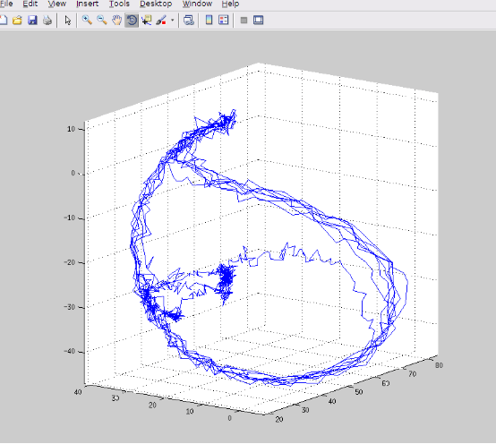
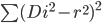
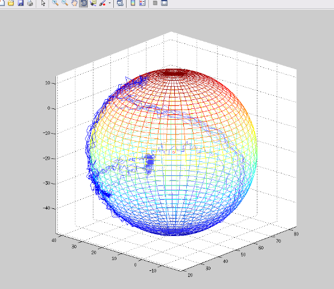

引言
在传感器数据融合以及工业测量中，常常需要对已知的数据或者是已知的结构的特征参数进行检测，来评估数据的信噪比或者结构的质量是否符合产品的需求。一般的，可以通过记录大量数据或者通过结构的离散点，来反解出它的特征参数。
以球面为例，这些特征参数可以是球的半径，或者是球心等。对于球体拟合算法，通常有代数拟合和几何拟合。在本例中，以一般的代数拟合方法为主进行介绍。
原理分析
以下图的数据为例，我们可以明显看出这些数据“可能”是一个球体，那么我们应该如何来得到这个球体的半径以及球心？

从如此多的数据中很明显可以看到，最后的执行方程组肯定是超定方程组。正常来看，超定方程组是没有解的，但在数值计算领域我们可以以最优解的形式来获得我们想要的参数。正所谓，有总比没有好，迟到总比不到好，是吧。
话不多说，原始数据经过剔除异常点以及滤波之后，我们假设这些离散点为
Pi = (Xi,Yi,Zi), i = 1，2，…，n
假如球的球心m为 (a,b,c)，球的半径为 r，则球的标准方程为
(x-a)^2 + (y-b)^2 + (z-c)^2 = r^2
以 Di 表示离散点 Pi 到 m 的距离，即
Di^2 = (Xi-a)^2 + (Yi-b)^2 + (Zi-c)^2, i = 1，2，…，n。
令残差平方和 S = 
其中 i = 1，2，…，n。
为了选取最合适的让该等式”尽量成立”，只需要让 S 为最小值即可。也就是说，b` = argmin(S)。而且很明显，S 肯定存在大于或等于 0 的极小值。由逼近算法可以罗列出超定方程组，在这里，我们将球的标准方程展开然后代入 S 中，将 S 对其中的未知数求偏导，令偏导为 0，得到极值点，比较之后即可得到最小值。由于解方程是比较基础的内容，本例中就不罗列出来了。
这个时候，就可以将 b` 中的数据直接代入球的标准方程，看看是否得到了我们想要的球面。一般的，可以直接得到比较好的球面了。
误差分析
这个时候还没有结束，我们还需要对我们所得到的球面进行评定，看看是否误差在允许的范围之内，这个范围取决于个人或者组织对产品的定义。我们可以将所得到的最优解 b` 以及离散点Pi的均方误差作为评定的参考，假如均方误差不在允许范围之内，可以再次进行剔除异常值还有滤波，一直迭代，直到数据满足要求。
原理扩展
从上述例子中，我们可以知道，该算法不仅可以从大量已知数据得出最优解，也可以从四个不共面的点来确定一球面，甚至可以通过结构的球冠来得到最匹配的球面。
下图是经过剔除异常值并且滤波之后，由上述逼近算法拟合得到的最优解。

结语
这个案例还比较容易，因为仅有 4 个未知量，而且也不需要考虑三维空间旋转。如果大伙搞懂了这个，下次再来给大伙讲讲二次曲面/椭球拟合算法（结合三维空间旋转，大概 10 个未知数）或者扩展卡尔曼滤波结合四元数进行姿态解算。
参考资料
《概率论与数理统计》（第 4 版）盛骤
This is copyright.